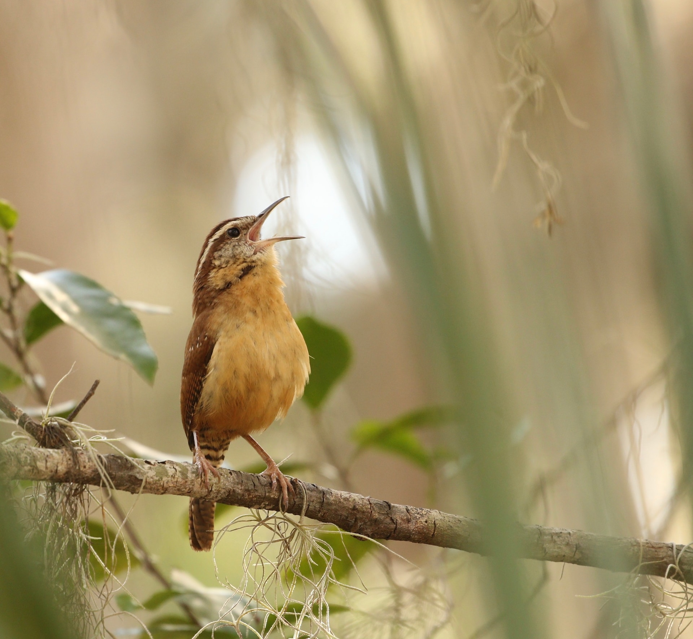

Image Credit: Ryk Naves on Unsplash
Image Credit: Mickey Estes on Pixabay
| Species Name | Habitat |
|---|---|
| House Wren | Scrub |
| Winter Wren | Forests |
| Bewick's Wren | Open woodland |
Small but spirited, low-lying but loud— the Carolina Wren is one of many species of songbirds that can be found on USC's campus. More often heard than seen, these wrens can pack quite the personality. They are very vocal when passed by people, and paired with their strong white eyebrows, they have the appearance of always looking angry or serious. Their song—which only the male sings—is strikingly loud for the bird's size, and carries a familiar but impressively variable tune.
In addition to their feisty look and personality, Carolina Wrens are extremely versatile when it comes to nesting locations. Have an empty outdoor pot, shoe, or space in your garage? A pair might try and nest there. And while other wren species are migratory, these ones stay in their territory all year round. Pairs mate for life, traveling and finding food together.